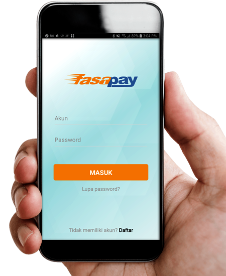

Kenyamanan Bertransaksi Dalam Genggaman
FasaPay Mobile memberikan kemudahan kepada pengguna untuk mengecek saldo dan mentransfer lebih cepat dan lebih mudah. Aplikasi ini dilengkapi dengan fitur yang membantu untuk melihat rincian transaksi, yang juga memiliki fitur mutasi yang memberikan informasi transaksi yang telah dilakukan.FasaPay Mobile Application dapat diunduh secara gratis dalam versi Android®.